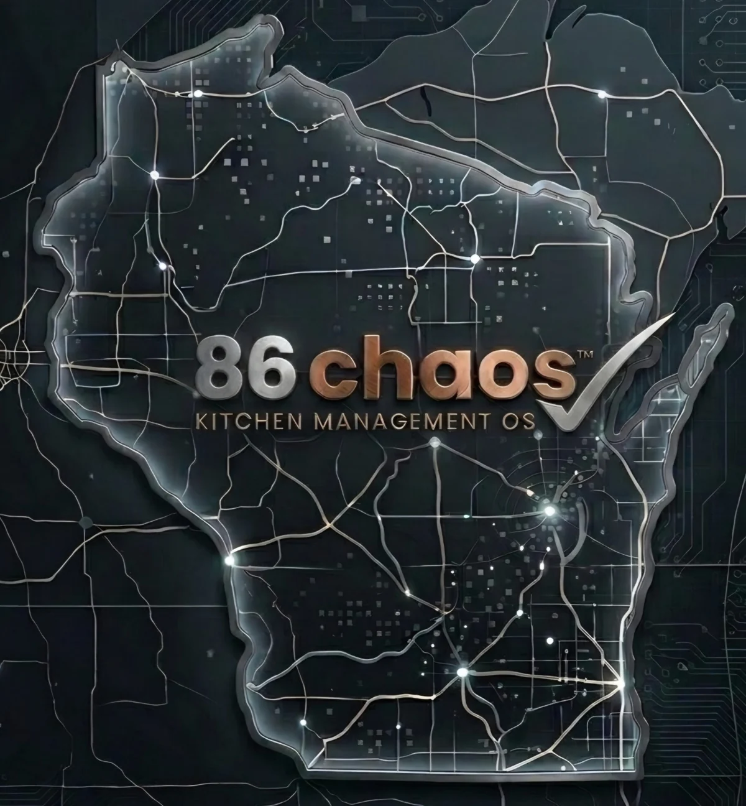

Limited Founder Beta • independent restaurants
Run the kitchen without running yourself ragged.
86 Chaos helps independent restaurants save manager time, reduce shift confusion, improve ordering decisions, protect food cost, and keep daily operations visible without a giant enterprise system.



Built on the line. Not in a boardroom.
Practical tools for the things managers chase every day.
Less chaos. More control.
Replace the pile of notes, texts, spreadsheets, and memory.
86 Chaos gives managers one practical place to see what needs attention, what is running low, what prep is unfinished, what the schedule is doing, and what the kitchen should review next.
Easy first step
Start with the problem that wastes the most time.
Pick prep, 86 alerts, reminders, schedules, ordering, or another daily headache. Founder Beta includes free setup help, so the restaurant does not have to build the entire operation before the app becomes useful.

Everything in one place
One operating layer for daily restaurant work.
86 Chaos brings prep, 86 alerts, schedules, inventory, invoices, recipes, maintenance, reminders, and manager follow-up into one organized workspace. Smart Kitchen and Owner Pro add the intelligence layer for ordering support, menu impact, cost visibility, reporting, and owner/admin controls.
View Full Feature MapFeature coverage
Why the AI matters
AI is built into the workflows that affect time, food cost, and manager decisions.
86 Chaos uses AI to reduce manager chasing, improve ordering decisions, catch price and waste problems, connect ingredients to menu impact, and surface what needs attention before it becomes another fire to put out.
How it pays for itself
Save 15 minutes a day and the math starts working fast.
Restaurants lose money in tiny leaks: managers chasing updates, prep getting repeated, 86s not reaching the team, invoices buried in piles, and inventory decisions made from memory. 86 Chaos is built to claw back those minutes and make food cost easier to see.
Example savings
Just 15 minutes/day
Estimated recovered time at $24/hour across 30 days.
Built for real restaurant chaos
The strongest parts of 86 Chaos are the things managers feel every day.
86 Chaos is built around the pain that costs time and money: missed prep, scattered communication, weak ordering visibility, stockouts, waste, inconsistent recipes, schedule confusion, equipment issues, and managers having to chase every answer.
AI Tools
AI tools that help managers catch problems sooner.
86 Chaos connects AI to the work managers already do: ordering, invoices, waste, par levels, prep, Menu Intelligence, and Manager Brief. It is built to surface useful signals and prepare reviewable work, not make unchecked decisions.
AI in 86 Chaos
Suggest. Explain. Draft. Alert. Analyze. Report.
Managers stay in control while the app helps surface what needs attention.
Smart Kitchen includes the full intelligence layer
Smart Kitchen adds ordering, inventory, and menu intelligence to the daily workflow.
Shift and Operations help organize the day. Smart Kitchen adds the stronger intelligence layer: AI-assisted ordering, Menu Intelligence, invoice/menu scan intelligence, Python Forecast, price warnings, waste/par insights, recipe/menu costing signals, Manager Brief intelligence, and 86Voice menu-impact support.
Recommended plan
Smart Kitchen
The plan for restaurants that want the app to help protect food cost, reduce waste, improve ordering, and show managers what needs attention.
AI-assisted ordering
AI-assisted ordering that uses the whole restaurant picture.
86 Chaos can help build order drafts from stock, pars, pending orders, events, prep needs, menu links, burn/waste logs, and invoice history. That means ordering can become faster, smarter, and less dependent on memory.
Manager asks
“What should I order?”
86Voice
86Voice: built for busy hands and loud kitchens.
Instead of stopping the shift to hunt through screens, managers and staff can use natural kitchen language for prep, tasks, reminders, 86 alerts, maintenance, waste, status questions, and AI-assisted ordering.
“Add clean fryer wall to tasks.”
The operating layer
One place for the shift, the kitchen, and the numbers.
Start simple: prep lists, schedule, reminders, and 86 alerts. As the restaurant gets comfortable, layer in invoices, recipes, maintenance, daily close, and labor visibility.
Today at a glance
Common concerns